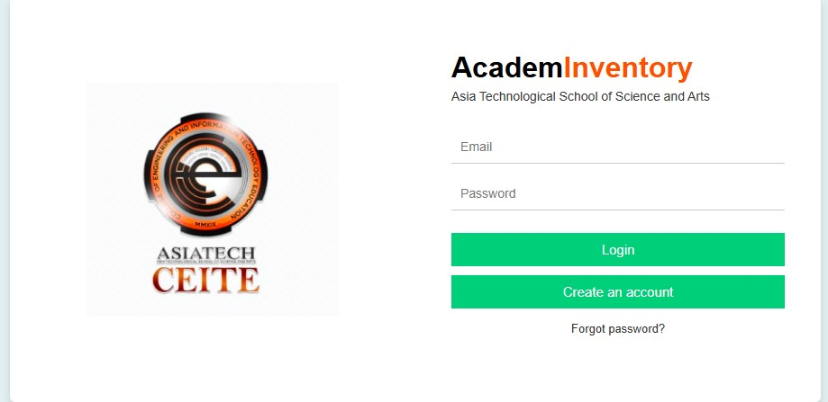
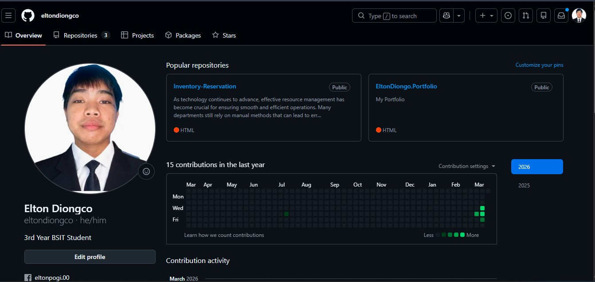

Projects

PawTrack System
Centralized pet health card system for veterinary clinics.

AcadameInventory
A centralized web that can help the departments from errors, delays, etc...
Login System
Authentication system using HTML, CSS, JS, PHP and MySQL.

Github Projects
Github projects that can use by anyone in public.